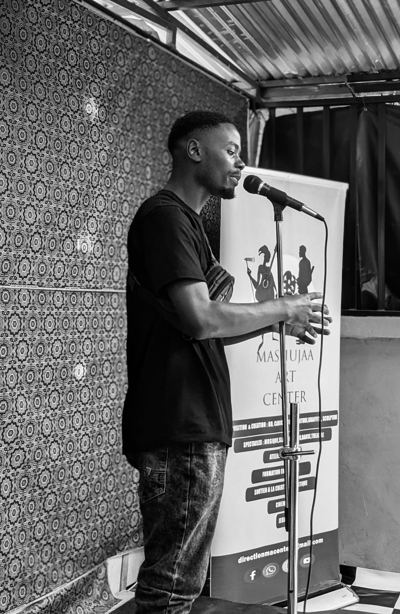

galerie



la poésie comme un espace de résilience, une voix pour faire exister ce qui se tait, une étincelle dans le noir.
basé à bukavu, sar eddy safari est un poète-slameur et rappeur dont le verbe traverse les espaces. lauréat du prix international jaob 2024, il explore les profondeurs de la condition humaine à travers une écriture aiguisée et sans concession.
son travail s'étend au-delà de la scène à travers la direction d'ateliers d'écriture thérapeutique à la bibliothèque de paix de panzi. sa trajectoire est marquée par des performances internationales, notamment une création en duplex avec lausanne en 2025.
chercheur en master 1 droit.

pour les projets, performances et ateliers d'écriture :
entrevousetmoisareddysafari@gmail.com